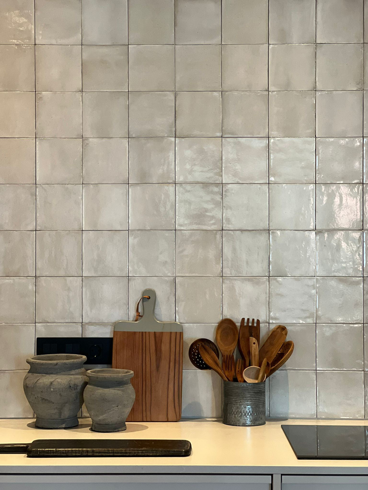

El objetivo de este proyecto era intentar aplicar nuestro estilo a la esencia de la arquitectura original, logrando un minimalismo elegante y actual. Ubicada en pleno barrio de Cuatro Caminos, en un edificio de mediados del Siglo XX, este piso de 190 Mts nunca había sido reformado, se encontraba en su estado original, por lo que había un montón de elementos originales que se podían restaurar, pero a su vez había que cambiarlo absolutamente todo.





Los espacios de la zona de noche se conservaron tal cual estaban, y en la zona de día se tiraron todos los tabiques que había entre la entrada, el salón, el comedor y la cocina, dejando un espacio único enorme pero separándolos ligeramente con unas preciosas mamparas de madera de roble y cristal. Además de permitir una circulación más fluida, esta solución permitió que la luz natural inundara la entrada y la cocina, que anteriormente era una zona en total penumbra.
Todas las estancias contaban con molduras y rosetones de escayola en sus techos, radiadores de hierro fundido y carpinterías de castaño que recuperamos y actualizamos. Diseñamos todos los acabados en tonos neutros, y el resultado fue una estética clásica pero renovada, atemporal y refinada para una vivienda de espacios generosos.